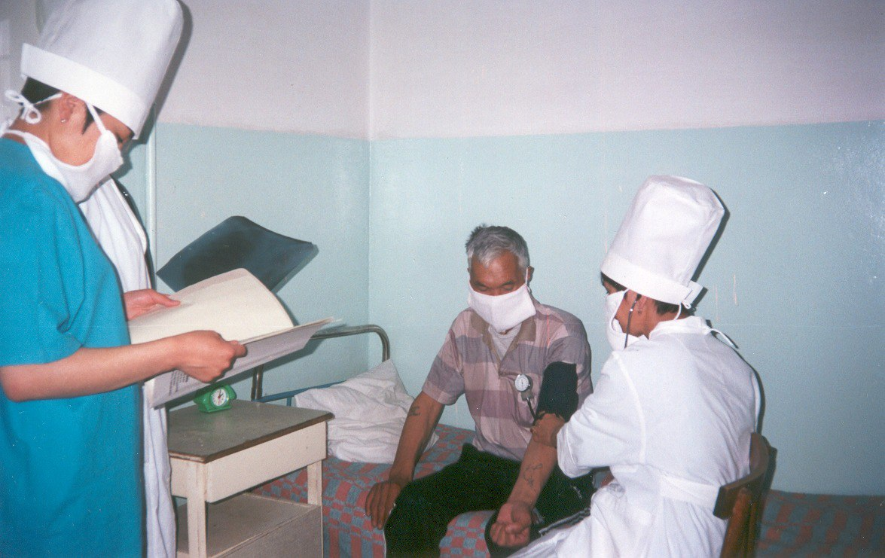

Основными источниками исследований служат документы, хранящиеся в фондах государственного Архива Восточно-Казахстанской области, департамента здравоохранения, областного противотуберкулезного диспансера, и личные воспоминания сотрудников ОПТД противотуберкулезных учреждений области. К сожалению, в связи с пожаром, многие архивные данные были уничтожены.
Усть-Каменогорский уезд, который входил в Семипалатинской губернии не имел противотуберкулезного диспансера. В г. Усть-Каменогорск существовал туберкулезный пункт и 5 коек при областной больнице, в г. Лениногорск — 2 койки.
На 1 декабря 1948 года в Восточно-Казахстанской области существовало 50 противотуберкулезных коек: в Зыряновске – 10 и по 5 коек в Зайсане, Кировске, Лениногорске, Предгорном и Самарском.
18 января 1949 года исполнительный комитет Восточно-Казахстанского Областного Совета депутатов трудящихся принимает решение о расширении противотуберкулезных коек в области до 265.
15 ноября 1950 года по решению исполнительного комитета Совета депутатов трудящихся ВКО, открывается городской противотуберкулезный диспансер г. Усть-Каменогорск на 25 коек в поселке Новая Гавань.
В это время областной противотуберкулезный диспансер располагал двумя зданиями, находящихся на расстоянии 4 км. друг от друга с общим количеством на 25 коек. Учитывая наличие в городе 2-х небольших учреждений, не имеющих материально-технической базы, необходимой для правильной организации противотуберкулезной помощи населению, выносится решение разрешить Облздравотделу области произвести объединение городского и областного противотуберкулезного диспансера в единый областной туберкулезный диспансер на 75 коек.
13 февраля 1953 года происходит объединение двух диспансеров. Терапевтический корпус остается в п. Новая Гавань, а диспансерное отделение находится по ул. Урицкого. Коечная сеть в области возрастает с 189 в 1952 году до 525 в 1962 году, причем городских коек 432, сельских – 92.
20 июля 1963 года Восточно-Казахстанский промышленный обком КП Казахстана и исполком промышленного областного Совета депутатов трудящихся выносит постановление № 193 «О развертывании городского противотуберкулезного диспансера в г. Усть-Каменогорск» со стационаром на 75 коек. Общее количество коек по области возросло до 605.
В 1972 году по области функционируют 1190 коек, из них городских 785, сельских – 405 коек. В областном диспансере — 145 коек, в городском диспансере –170. Санаторных коек 400.
В этом же году Областной противотуберкулезный диспансер переходит в новое здание на Опытном Поле.
9 февраля 1977 года исполком областного Совета депутатов трудящихся выносит решение №79 «Об объединении стационаров областного и городского диспансеров» с мощностью в 500 коек, а в 1979 году и диспансерное отделение присоединяется к областному диспансеру.
К 1983 году в области существует уже 3 диспансера, 4 туберкулезные больницы, 6 туб отделении и 8 туб кабинетов. Всего по области функционируют 1050 коек без санаторных. Санаторных коек 370, 220 из них детские. Число санаторных мест в детских садах возросло с 215 в 1978 году до 450 в 1983 году.
К 2012 году по области функционировало 5 диспансеров, 4 туберкулезные больницы, 1 туберкулезное отделение для принудительного лечения и 15 туб. кабинетов.
В рамках проведенных мероприятий по новой модели «Интегрированный контроль туберкулеза на 2016-2025 гг.» количество туберкулезных кабинетов увеличилось с 15 в 1983 -2012гг. до 19 в 2015г. и в 2016г. по настоящее время до 24 противотуберкулезных кабинетов при ПМСП ВКО.
В результате проведенной оптимизации коечного фонда туберкулезной службы, по состоянию на 1 июня 2017 года по области функционируют 3 юридических лица, имеющие в своей структуре стационар, диспансер: • ОПТД г. Усть-Каменогорск, с 01.09.2016г. присоединены МРПТД Тарбагатайского района и ГПД г. Риддер; • РПТД г.Семей, с 01.09.2016г. присоединен взрослый туберкулезный санаторий «Березовка»; • ДПТБ г.Семей, с 01.09.2016г. присоединены 2 детских санатория «Сосна», «Первомайский».
Общее количество круглосуточных коек составляет 715 и 10 коек дневного стационара.
С 1 сентября 2016 г. отделение для больных с хронической формой туберкулеза с. Кокпекты закрыто и переведено на баланс ЦРБ г. Зыряновск в количестве 25 коек.
Говоря о становлении фтизиатрической службы, нельзя не отметить тех людей, которые на разных этапах 75-летнего периода организовывали ее работу.
Первым главным врачом областного противотуберкулезного диспансера была Шабурова Анна Федоровна – 19.04.1914 г.р., окончившая лечебный факультет Казахского Гос. мед. института им. Молотова в 1942 г. Главный врач с 20.05.1950 по 1951 год
В последующие годы главные врачи:
- Селевёрстов Александр Петрович – 20.08.1919 г.р., Главный врач с 20.08.1951 г. - 1952, окончил Тбилисский мед.институт в 1943 г.
- Винников Павел Лазаревич – 1921 г.р, Каз.мед.институт им. Молотова, врач-лечебник, кандидат медицинских наук. Главный врач с 17.11.1952 г.- 1954
- Павлушина Анна Исаевна – сентябрь 1922 г., окончила Новосибирский Гос.мед.институт в 1948 г. Главврач с 08.02.1954 г.-1955
- Тутко Борис Дорофеевич – 1925 г.р., окончил Харьковский мед.институт в 1955 г. Врач-фтизиатр, участник ВОВ в составе войск 1-го Белорусского фронта (Польша, Германия). Главврач с 08.09.1955 - 1960
- Брюханова Зоя Гавриловна, 1960 — 1962 гг
- Филипченко Владислав Евдокимович, 1962 — 1966 гг
- Савченко Анатолий Федорович, 1966 – 1969 гг
- Санжак Гертдруда Ивановна, 1969 – 1971 гг
- Сидорова Нина Сергеевна, 1971 — 1983 гг
- Пономарев Сергей Александрович, 1983 — 1984 гг
- Лысенко Валентина Михайловна, 1985 — 1990 гг
- Кожасеитов Ришат Кунашевич, 1990 — 2007 гг
- Жигитекова Майгуль Абайхановна, 2007 — 2012 гг
- Зетов Аскар Шынтасович, 2012 — 2014 гг
- Садвакасова Динара Джамбуловна, 2014 — 2020 гг
- Сафиоллинова Райфа Сафиоллиновна, с мая 2021 года и по настоящее время.
Детское отделение
Первый прием детей больных туберкулезом начали в 1949 году при детской поликлинике № 1 г. Усть-Каменогорск, в котором был открыт противотуберкулезный кабинет для детей области.
Прием вела Валентина Сергеевна Решетникова, в будущем заслуженный врач Республики Казахстан, направленная к нам в область после окончания Оренбургского Государственного медицинского института в 1949 г.
В те годы фтизиатрическая помощь области велась под руководством главного врача детской больницы №1 Ханны Самойловны Мартинсон, к.м.н. Вначале было всего 5 коек, затем их число росло с каждым годом. Отделение, всего одна (!) палата размером в 50 кв. м., размещалось на втором этаже деревянного дома.
А уже спустя три года, в 1952 году, официально зарегистрировано и открыто туберкулезное отделение на 35 коек. В связи с открытием областного противотуберкулезного диспансера, детское отделение на 60 коек переводится в здание на Опытном Поле под заведованием Галины Ганиевны Батовой.
Первый углубленный анализ работы по лечению туберкулезного менингита обобщен Решетниковой в 1959 году и далее неоднократно в последующие 60-ые годы. Валентина Сергеевна проработала более 20 лет, ею разработаны научно-обоснованные системы ранней диагностики и терапии туберкулезного менингита и локальных форм туберкулеза у детей и подростков.
Не менее насыщенными были последние 20 лет детского отделения областного противотуберкулезного диспансера. С 1995 года отделение возглавила Мелания Менасовна Хамитова и до самого его закрытия заведовала им.

Терапевтическое отделение
Первоначально терапевтическое отделение облтубдиспансера находилось в п. Новая Гавань. Размещалось в одноэтажном здании барачного типа, без всяких удобств. Лежало около 70 больных, две палаты были выделены только для лечения туберкулезного менингита. Что интересно, в коридоре на двух медицинских постах в шкафах хранились медикаменты, а медицинские инструменты стерилизовались методом кипячения.
Одной из первых, кто возглавил терапевтическое отделение была Галина Ахметовна Кадырбаева, именно она лечила менингитных больных. Специализировалась по спиномозговым пункциям, в совершенстве владела техникой искусственного пневмоторакса и пневмоперитонеума, больные любили и уважали ее, говорили, что у нее «очень легкая рука».
В 1972 году для терапевтического корпуса выделяется здание в поселке Опытное Поле, более удобное, светлое и просторное. Заведующей отделением назначена Надежда Георгиевна Квашнина.
После объединения двух диспансеров терапевтический стационар размещается в пятиэтажном здании бывшего терапевтического корпуса городского тубдиспансера (где находится по сей день). Заведующей стационара стала Елизарова Нина Ивановна.
Первый углубленный анализ работы по лечению туберкулезного менингита обобщен Решетниковой в 1959 году и далее неоднократно в последующие 60-ые годы. Валентина Сергеевна проработала более 20 лет, ею разработаны научно-обоснованные системы ранней диагностики и терапии туберкулезного менингита и локальных форм туберкулеза у детей и подростков.
Стационар состоял из 3-х отделений – для лечения впервые выявленных больных, для повторного лечения и лечения больных с хроническими мультирезистентными формами туберкулеза. В последующие годы отделения объединяли, разъединяли. В настоящее время оно состоит из двух отделений.
В разные годы заведующими были: Надежда Григорьевна Квашнина, Нина Ивановна Елизарова, Анна Яковлевна Пирятинская, Галина Ивановна Самойленко, Назира Нургазиевна Закарьянова, Сергей Александрович Пономарев, Кульбакыт Амировна Жыкбаева. Врачами ординаторами работали Маулия Труспековна Байбатырова, Назым Каримхановна Шаймарданова.
Была у врачей фтизиатров и медицинских того времени одна для всех характерная особенность — преданность не только профессии, но и тубдиспансеру. Принципиальность, требовательность, активная жизненная позиция, ответственность за порученное дело снискали высокий авторитет и признание среди медицинской общественности области, и безусловно любовь и уважение среди пациентов.
